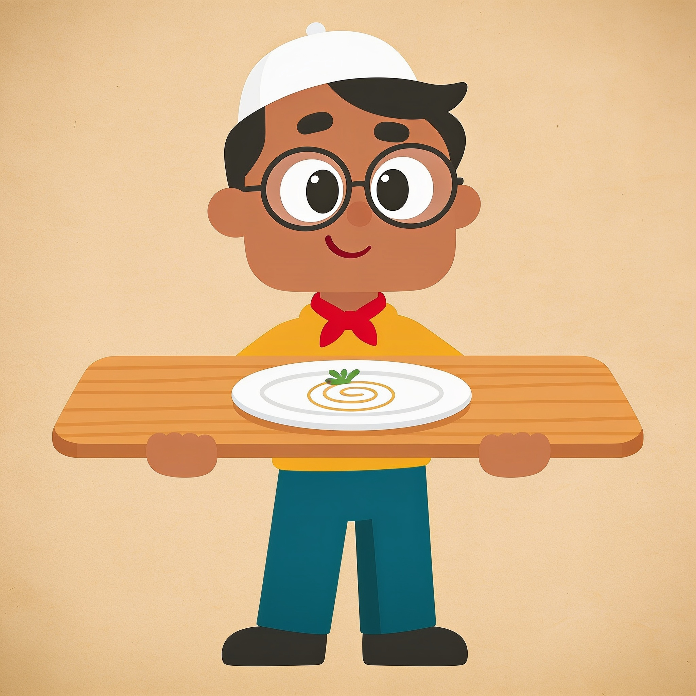

Three directions for Tahir
Same character — same face, kufi, glasses, mustard sweater — wearing three different "jobs". The face is locked; the direction decides his role in the app and how the logo lockup behaves. Pick a direction (or a hybrid), not a redraw.

The Foodie Friend
Tahir as your food-obsessed buddy, fork raised in a toast. He's not a chef and not an inspector — he's the guy who already knows the spot. Zero costume; the character reads instantly at any size.
Strengths — cleanest app icon (head only); mascot stays honest: verification is the UI's job, not his costume's.
Watch out — carries the least "verification" story on his own; leans on the VerifiedSeal in UI to complete it.

The Host
A small butcher-red neckerchief and a wooden serving board: Tahir is presenting the list to you like a waiter with the day's specials. The red neckerchief ties his outfit directly to the brand red.
Strengths — the neckerchief is a one-color, scalable brand cue; the board literally "presents the list" (hero banners, "Tahir's Favorites" ready-made).
Watch out — board + plate is busier at favicon size (use head-only crop there, same as A); props need to stay simple in every future pose.
The Scout
Clipboard checklist + thumbs-up: Tahir is the guy actively making the list — he checks, he ticks, he recommends. The scalloped red seal behind him echoes the stamp language of the trust system.
Strengths — visually explains the product in one image; the seal backdrop doubles as a social avatar / app splash.
Watch out — the red seal skirt risks red meaning "verified-adjacent", which must stay stamp-GREEN in the trust system; the checklist's red check would need to become green (or ink) in production use to keep the colorblind-safe rule intact.
Logo lockups, per direction
Every direction shares the same wordmark — Archivo Black, red apostrophe. The difference is what sits with it. All must survive at 16px favicon.